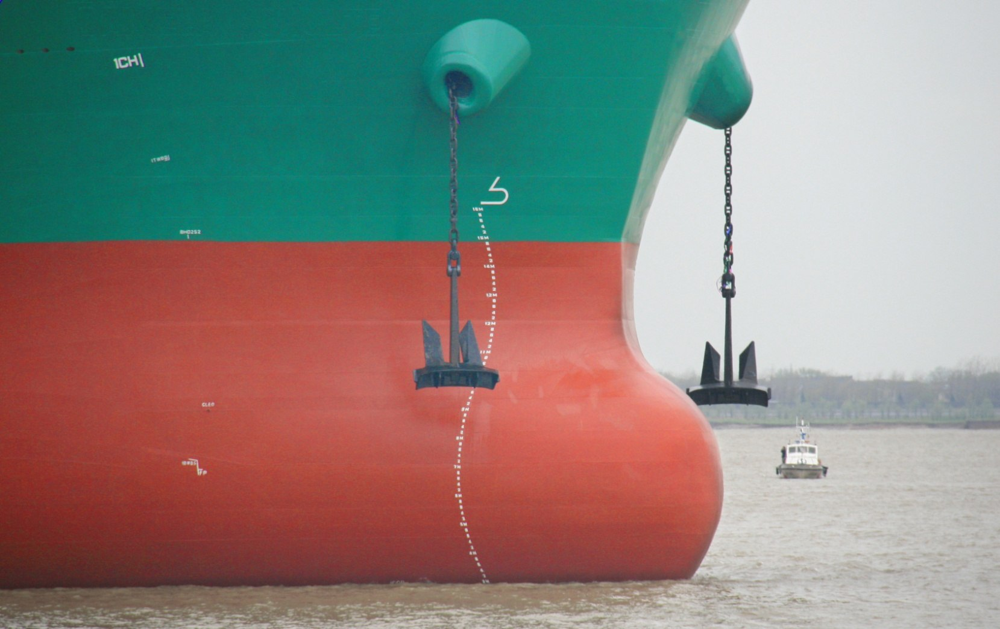

Hard surface
Designed to withstand mechanical cleaning with less damage to the coating.

Solvent-free hard antifouling coating
G60 provides hard antifouling protection for the underwater external hull. Its easy-to-clean surface supports underwater robotic cleaning as part of a planned hull maintenance programme.
Designed to withstand mechanical cleaning with less damage to the coating.
A smooth underwater surface supports efficient vessel operation.
Supports removal of marine growth during planned hull maintenance.
Combines coating protection with underwater robotic cleaning.
Select the coating system and cleaning programme with the technical team. Product performance depends on application, operating conditions and maintenance.
G50 provides corrosion protection, while G60 delivers a hard antifouling surface compatible with underwater robotic cleaning. Together they support coating application and in-service hull maintenance.
Talk to our team about your vessel, operating conditions and next project.